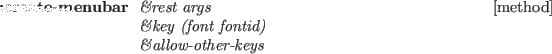
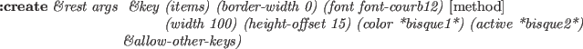
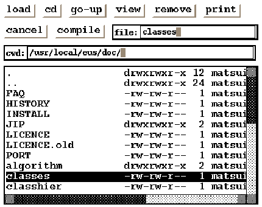

panel [class]
:super xwindow
:slots (pos items fontid
rows columns ;total number of rows and columns
next-x next-y
item-width item-height)
-
- Panel is a xwindow with the capability to lay out panel-items or any
xwindows including other panel objects.
A panel object supplies the default font for every panel-item
created in the panel.
Application windows should be defined as subclasses of the Panel.

-
- creates and initializes a panel.
Since superclass's :create is invoked,
all creation parameters for xwindow, such as width, height,
border-width, etc., are allowed.
Item-height and item-width give the minimum height and width
for each panel-item.
:items [method]
-
- returns the list of all items associated.
:locate-item item &optional x y [method]
-
-
Item is any xwindow object, normally a panel-item.
If x and y are given, the item is located there.
Otherwise, item is located adjacent to the most recently located item.
Items are located from top to bottom, from left to right,
as shown in Fig. 17.
:Locate-item also adds item in the items and subwindows
list, and makes it visible by sending :map.
Figure 17:
Item lay-out in panel
|  |

-
- creates an instance of the panel-item class specified by klass
(i.e., button-item, menu-button-item, slider-item, joystick-item, etc.),
and place the item in the panel using :locate-item.
Args are passed to klass's :create method.
Label is the identification string drawn in the panel item.
Receiver and method specify the event handler called upon
the corresponding event.
:delete-items [method]
-
- delete all panel-items.

-
- creates a menubar-panel and locates it at the top of the panel.
The following methods are provided to avoid "subclass's responsibility"
warning message when events are sent to panels without event handlers.
User applications should override these methods.
:quit &rest a [method]
-
-
throws :window-main-loop and terminates event processing.
:KeyPress event [method]
-
- returns NIL.
:KeyRelease event [method]
-
- returns NIL.
:ButtonPress event [method]
-
- returns NIL.
:ButtonRelease event [method]
-
- returns NIL.
:MotionNotify event [method]
-
- returns NIL.
:EnterNotify event [method]
-
- returns NIL.
:LeaveNotify event [method]
-
- returns NIL.
Subsections
2016-03-23